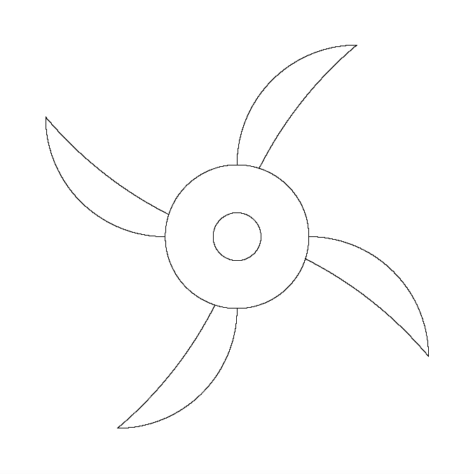
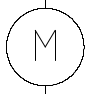

Demostración del Circuito y Adquisición de Datos
Proyecto de desarrollo de tarjeta de adquisición de datos mediante puerto paralelo LPT, control de motor e instrumentación con sensores LDR.
Visualiza el vídeo completo del funcionamiento del circuito:
▶ Ver Vídeo Demostración del Circuito (Google Drive)Documentación Gráfica del Proyecto


